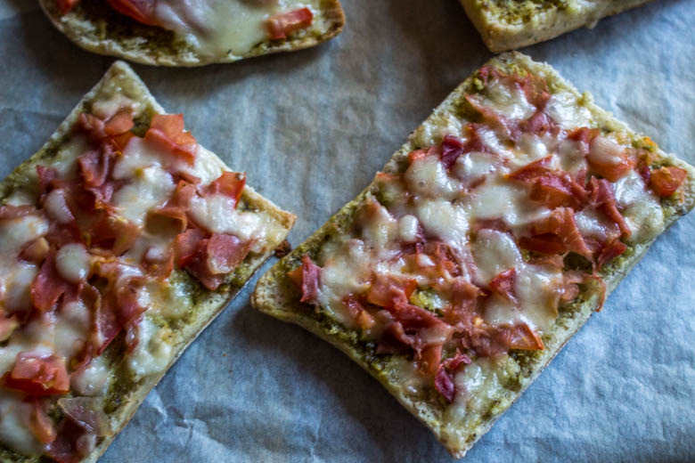
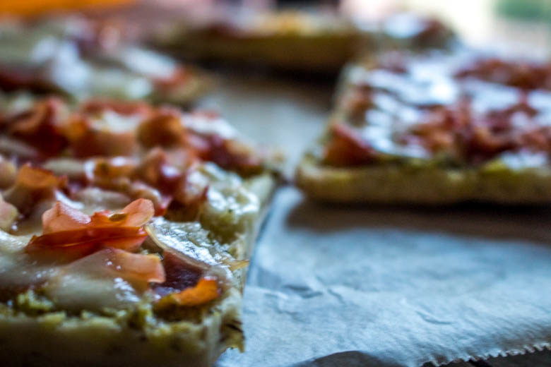

Tartines Pesto-Tomates-Mozza-Jambon

Coucou tout le monde!!!! Aujourd’hui je partage avec vous ma recette de tartine préférée.
Quand vous demandez à quelqu’un quel est son plat préféré vous ne vous attendez pas à ce qu’il vous réponde « des tartines » ! Pourtant c’est ce que mon chéri m’a répondu!! Je fais cette recette en moyenne 1 fois par semaine (se sont les conditions de Mr^^) et je ne vais pas m’en plaindre non plus car je suis une grande fan aussi!
Notre tartine préférée est très simple : un peu de pesto, quelques tomates, de la mozzarella et du bon jambon Serrano et du bon pain ciabatta maison (recette ici)
Pour ceux qui aiment les tartines vous en avez d’autres juste ICI
C’est parti pour la recette!!
Ingrédients
- Pains ciabatta - 4
- Mozzarella - 325 g (eniron 2 boules et demi)
- Tomates - 2
- Pesto - 200 g
- Jambon serrano - 6 tranches
- ail (facultatif)
Instructions
- Couper les ciabattas en deux dans le sens de la longueur (RECETTE des CIABATTAS : Ici) pour cette recette j'ai fait des ciabattas au thym
- Si vous aimez l'ail vous pouvez gratter une gousse d'ail sur les pains; sinon passer cette étape!
- Tartiner les pains de pesto
- Couper les tomates en fines rondelles et déposez les sur le pesto
- Couper grossièrement le jambon et déposez le sur les tomates
- Terminer avec la mozza couper en rondelles. (2 boules de mozza peuvent suffire mais comme nous sommes de gros gourmands on en met un peu plus :) )
- Enfourner à 180° pendant 10min

